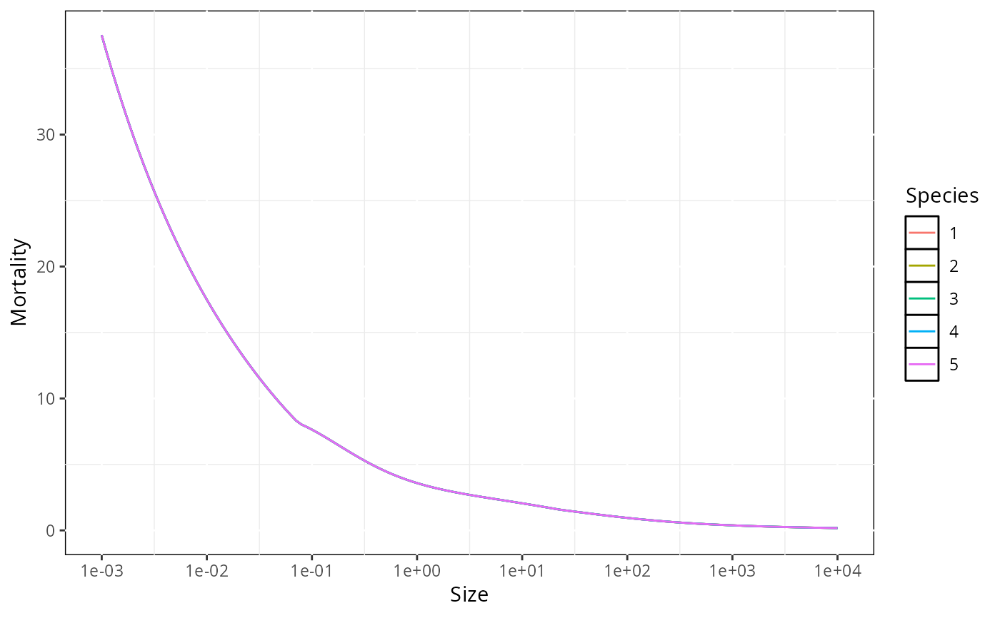

Plots the total mortality rate of species across sizes.
Usage
plotevoMortality(
object,
time_range = max(as.numeric(dimnames(object@n)$time)),
print_it = TRUE,
returnData = FALSE,
comments = TRUE
)Arguments
- object
An object of class mizer::MizerSim.
- time_range
The time range (either a vector of values, a vector of min and max time, or a single value) to average the abundances over. Default is the entire simulation time range.
- print_it
A boolean value that displays the plot. Default is TRUE.
- returnData
A boolean value that controls the output. Either a dataframe ready for ggplot (TRUE) or the plot itself (FALSE). Default is FALSE.
- comments
Logical indicating whether to print diagnostic comments.
See also
Other plotting functions:
plotDynamics(),
plotPredMort(),
plotPredRate(),
plotSS(),
plotSpawn(),
plotStarvation(),
plotevoFeeding(),
plotevoGrowth(),
plotevoTrait()
Examples
# \donttest{
params <- evoParams(no_sp = 5)
#> ℹ No `a` column so using a = 0.01 in w = a l^b, with w in g and l in cm.
#> ℹ No `b` column so using the isometric default b = 3 in w = a l^b.
#> ℹ Using f0, h, lambda, kappa and the predation kernel to calculate gamma.
#> Warning: Some column names in your species parameter data frame are very close to standard parameter names: `zeta` (did you mean `beta`?). Please check for mis-spellings.
sim <- evoProject(params, t_max = 20)
plotevoMortality(sim)

# }